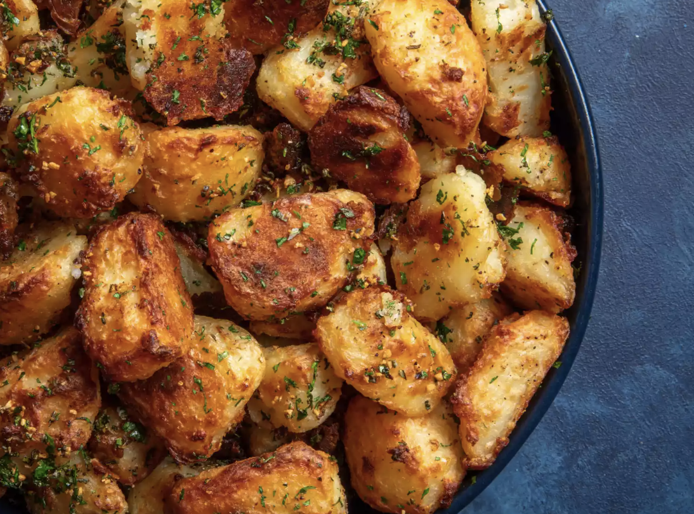

Grandma's Mac and Cheese

Description and Recipe
Every Christmas holiday I bake this amazing macaroni and cheese side dish. My family loves it. No one in the family can bake it as good as I can!
Ingredients
- Milk
- Macaroni
- Cheddar Cheese
- Mustard
Steps
- Pre-heat the over to 400 degrees
- Cook the macaroni according to the box instructions
- Pull the macaroni in a pan
- Add the cheddar, milk, and mustard to the macaroni
- Bake the macaroni and cheese for 1 hour covered with foil
Crispy Potatoes

Description and Recipe
Crispy potatoes are a staple in my family's household
Ingredients
- Potatoes
- Olive Olive
- Parsley
- Salt and Pepper
Steps
- Pre-heat the oven to 400 degrees
- Cut the potates into fourths
- Cover the potatoes with olive oil and Parsley
- Bake the potatoes in the over for 45 minutes or until crispy